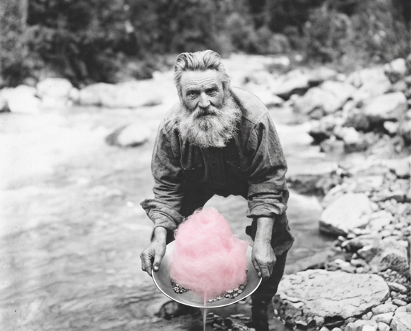

2026
Gold Diggers
Greenville, California
Saturday • July 18
2026
Saturday • July 18
Gold Diggers celebrates the history, heritage, and community spirit of Indian Valley.

Parade entry is free and open to businesses, organizations, families, and neighbors.
Join the Parade →
Food vendors, artisans, nonprofits, and local businesses are welcome. Setup begins at 7:30 AM.
Become a Vendor →
Watermelon eating contest, raffle, and activities throughout the day.
Live music by Side Fx
8 PM – 11:59 PM